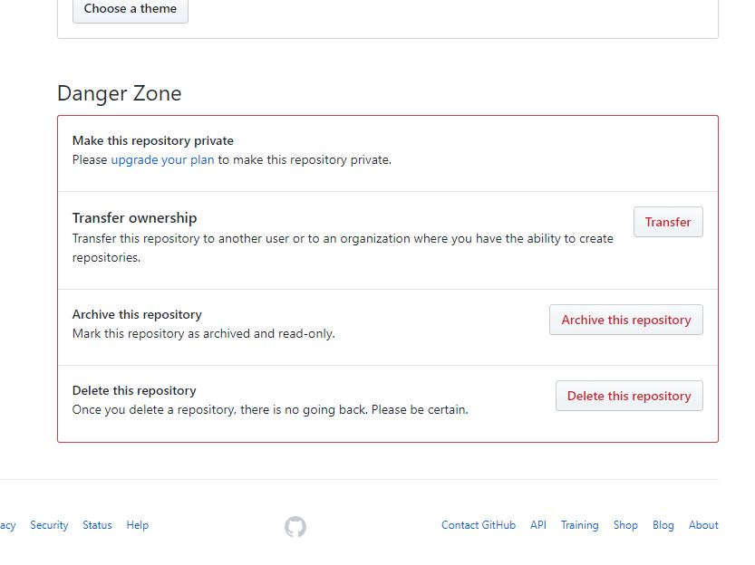

|
- Заходим в аккаунт
- Выбираем репозиторий который хотим удалить
- Заходим в репозиторий
- Выбираем в меню "Settings" (рис.)
- Скроллим страницу вниз, выбираем блок "Danger Zone", кнопка "Delete this repository" (рис.)
- В строке прописываем название репозитория на удаление: (рис.)
- Подтверждаем
|
 |